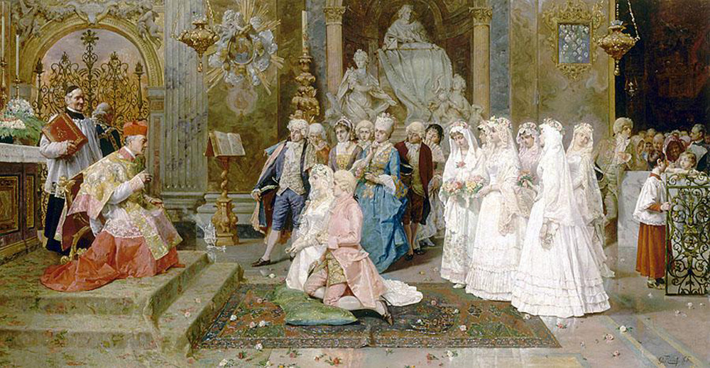

Exhibitions
The Secret History of Kiss, Shooting Gallery, San Francisco, California, US, November 1–December 6, 2008.
Literature
Ron English, Status Factory: The Art of Ron English (San Francisco: Last Gasp of San Francisco, 2014), p. 87. ISBN 978-0867197891.

Ron English, Original Grin: The Art of Ron English (Paris: Cernunnos, 2019), p. 38. ISBN 978-2374950938.

Notes
This work appears in cropped form on Shooting Gallery SF’s gallery page for The Secret History of Kiss.
This painting also references members of the band KISS in their signature makeup.
The work is also documented in online coverage of The Secret History of Kiss.
Ancillary Documentation




Additional Online Circulation
Openings: Ron English @ Shooting Gallery
· Arrested Motion
Naver post
· m.blog.naver.com
à ðñþÑ‚Ñ‹ à þýð Øýóûøшð
· Nevsedoma
Ron English post
· LiveJournal
Naver post
· m.blog.naver.com
Ron English - The Secret History of Kiss
· Art Juicer / LiveJournal
Graphic Design archive
· Eurekart
The Secret History of Kiss
· The Mongrel